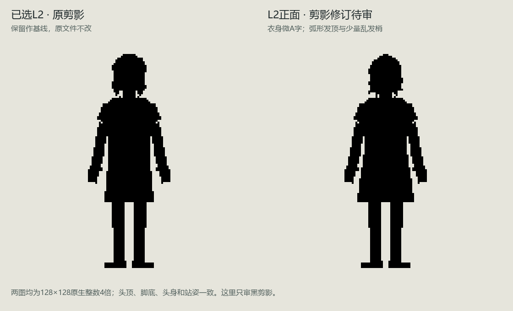
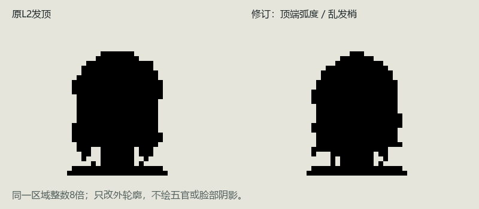

L2 阶段一 · 正面剪影
左侧为已选 L2，右侧为本轮修订。只看两处：衣身略呈 A 字；发顶弧度与略乱的发梢。头身、短袖、手脚和站姿沿用 L2。
可编辑 Aseprite · 原生 PNG · 说明／实测 · 保存回读验证

原生画布均为 128×128；人物高度均为 117 px。腰宽保持 23 px，下摆从 27 px 改为 31 px。

发顶和发梢只改外轮廓，不绘脸部细节或阴影。
本轮剪影 · 原生 1:1 与整数 4 倍
等待剪影确认后再上色。本轮没有两色／成品色、身份标记、侧背面或 3D，未改动正式场景；未调用 PixelLab 或 Tripo。